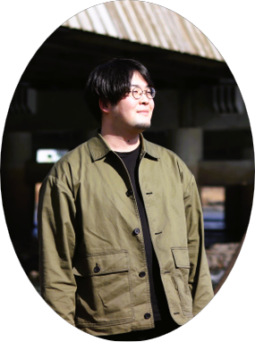
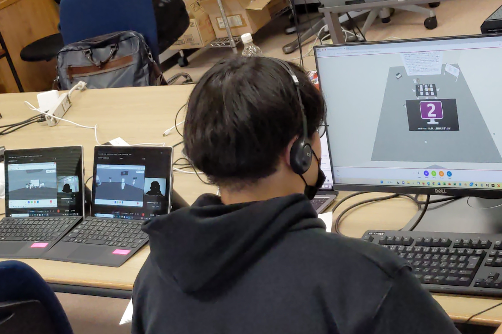

About me

Project

Publication
■ International Paper
Kamada, K., Watarai, R., Wang, T., Takashima, K., Sumi, Y., and Yuizono, T.: “Explorative study of perceived social loafing in VR group discussion:
A comparison between the poster presentation environment and the typical conference environment”, IFIP TC.13 International Conference on Human-Computer Interaction (INTERACT), LNCS, vol 14144, pp. 115-134, (Aug. 2023). (Oral, Peer-reviewed, Full paper) Link
■ Domestic Paper (Japanese) 鎌田光太郎*, 渡会隆哉, 王子洋, 高島健太郎, 角康之, 由井薗隆也．: “VRグループ・ディスカッションにおける会議形態の違いがターンテイキングに与える影響”， 第200回ヒューマンインタフェース学会研究会「コミュニケーション支援および一般」, ヒューマンインタフェース学会研究報告集, 25(3), pp.97–102, (May. 2023). (Oral, Non-review)
渡会隆哉, 鎌田光太郎*, 王子洋, 高島健太郎, 角康之, 由井薗隆也．: "VR会議における他者との対面量に着目した会議の質評価の試み", DICOMO 2023 シンポジウム, (Jul. 2023). (Oral, Non-review)
羅海洋, 由井薗隆也, 鎌田光太郎*, 王子洋．: “感情変化に注目した機械学習による冒険ストーリー生成の試行”, DICOMO 2023 シンポジウム, (Jul. 2023). (Oral, Non-review)
■ Domestic Paper (Japanese)